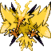
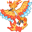
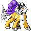
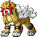
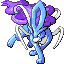

Articuno-P · Lv 100
Ice Beam, Sky Attack, Rest, Toxic
After the first Elite 20 clear, the postgame offers a full Level 100 Master challenge. The rematches are a separate victory from the original RELICS reveal, and completing them earns special congratulations from Professor Oak and Professor Elm.
Challenge the full set of 20 Level 100 Master opponents. Their battles are repeatable. The original one-time Professor Oak and Professor Elm RELICS story dialogue and rewards belong to the first clear; on completing the Master challenge, you receive a different congratulatory message.
Use RelicDex → Trainers to inspect listed trainers and the teams that have been verified from the PRU source. Save before tackling the full series and report any team discrepancies against Alpha 01.
Oak and Elm battle together. Both the first E20 final encounter and the Level 100 Master version use these six Pokémon, sourced from the game’s src/data/trainers_hns.party. Each Pokémon carries a Sitrus Berry.
Ice Beam, Sky Attack, Rest, Toxic

Thunderbolt, Thunder Wave, Discharge, Protect

Flamethrower, Fire Blast, Sunny Day, Protect

Thunderbolt, Thunder Wave, Discharge, Protect

Flamethrower, Fire Blast, Sunny Day, Protect

Surf, Ice Beam, Hydro Pump, Protect